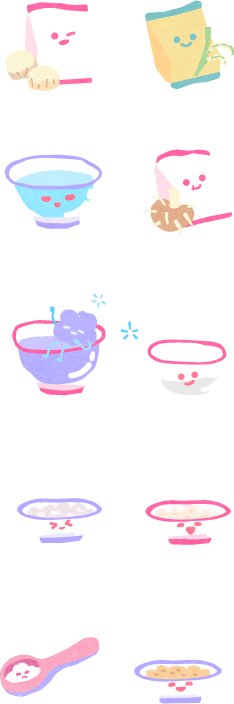
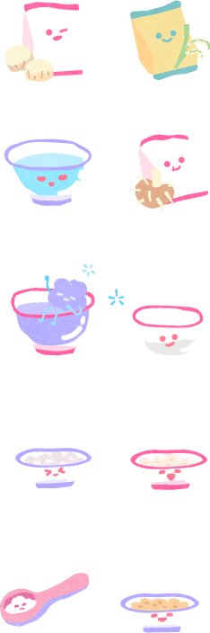

บุหลันดั้นเมฆ
ขนมชิ้นนี้ได้รับแรงบันดาลใจมาจาก
บทเพลง "บุหลันลอยเลื่อน" หรืออีกชื่อ
คือ "บุหลันลอยฟ้า"
เพลงพระราชนิพนธ์ใน
พระบาทสมเด็จพระพุทธ
เลิศหล้านภาลัย รัชกาลที่ 2
ความเป็นมาว่า
หลังจากทรงซอสายฟ้าฟาด
อยู่จนดึกก็เสด็จเข้าบรรทม
ทรงพระสุบินว่าเสด็จไป
สถานที่สวยงาม
พระองค์ทรงตั้งพระทัยสดับ
เสียงดนตรีอันไพเราะอยู่เป็น
เวลานาน จากนั้นดวงจันทร์
ก็ค่อย ๆ ลอยเคลื่อนห่างออก
ไปในท้องฟ้าพร้อมเสียง
ดนตรีก็ค่อย ๆ เบาจางห่าง
หายไป พลันเสด็จตื่นบรรทม
จึงโปรดให้ตามมหาดเล็กเจ้า
พนักงานการดนตรี
เข้ามาต่อเพลงในยามราตรีนั้น
และพระราชทานนามเพลงว่า
"บุหลันลอยเลื่อน"

เป็นขนมที่โรแมนติกมาก
ทองหยอดอยากเป็นให้ได้
เหมือนดวงจันทร์..
การอุปมาถึงดวงจันทร์
โรแมนติกเสมอ
วัตถุดิบ
แป้งข้าวจ้าว
แป้งมัน
น้ำดอกอัญชัน
น้ำตาลทราย
ไข่แดง

ความเชื่อของ
ขนมบุหลันดั้นเมฆ
นิยมใช้เมื่อทำนายเกี่ยวกับ
การทำงานประจำวัน
เมื่อการหยอดนั้นตรงรู
ของขนมจะนับว่าการงาน
วันนี้โชคดีนั่นเองหากยอดไม่ตรงรู
จะนับว่าการงานวันนี้โชคดี
เล่นแล้วจะโชคดี
หรือไม่มาดูกัน
ในส่วนของบุหลัน(ดวงจันทร์)
สีเหลือง เวลาหยอดแล้วนำไป
นึ่ง จะขึ้นสวยหรือไม่ ต้อง
เสี่ยงทายดู
คุณนึ่งสวยมาก!
สิ่งที่มุ่งหวังหรืออธิฐานไว้
จะประสบความสำเร็จดังใจหมาย
เล่นอีกครั้ง
คุณนึ่งพลาดไปนิดเดียว!
ถึงวันนี้จะไม่ใช่วันของคุณ
แต่พรุ่งนี้จะต้องสำเร็จอย่างแน่นอน
เล่นอีกครั้ง
ทำไมถึง
เริ่มเลือนราง
ขนมไทยชาววัง
ที่พบเจอได้ยากและยุคสมัยที่เปลี่ยนไป
ด้วยวิธีการทำที่ต้องใช้เวลานานและเทคนิค
แพรวพราวที่จะทำให้ขนมสวยและอร่อย
และด้วยเพราะขนมเก็บได้ไม่นาน ต้อง
ทำสดวันต่อวัน จึงไม่เป็นที่นิยมทำกัน


 
